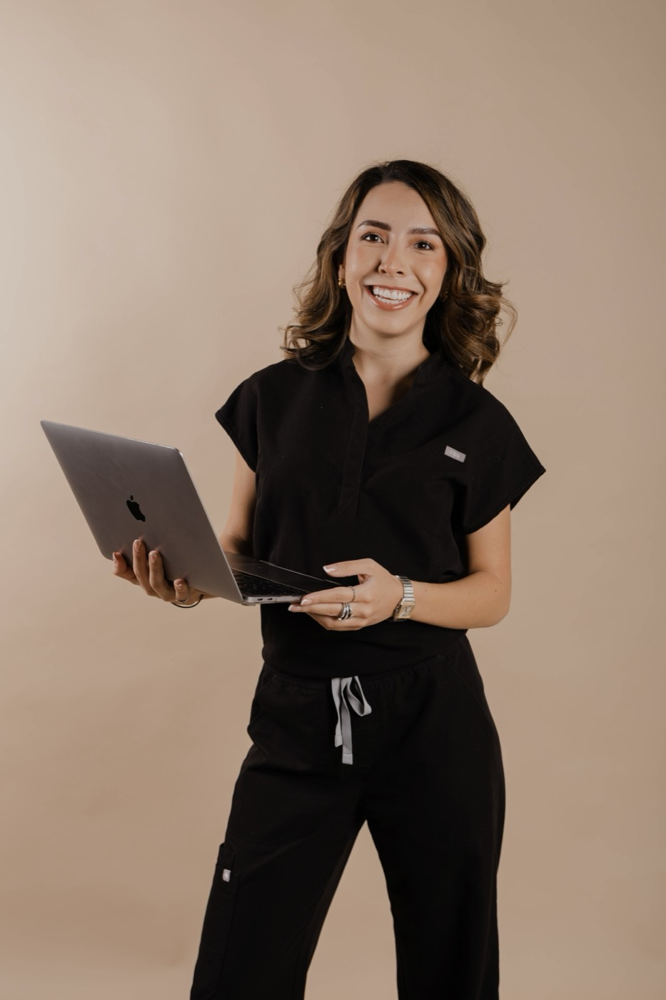
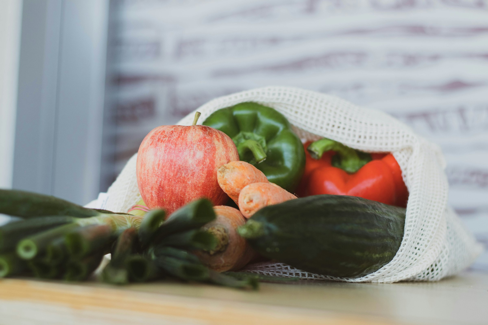
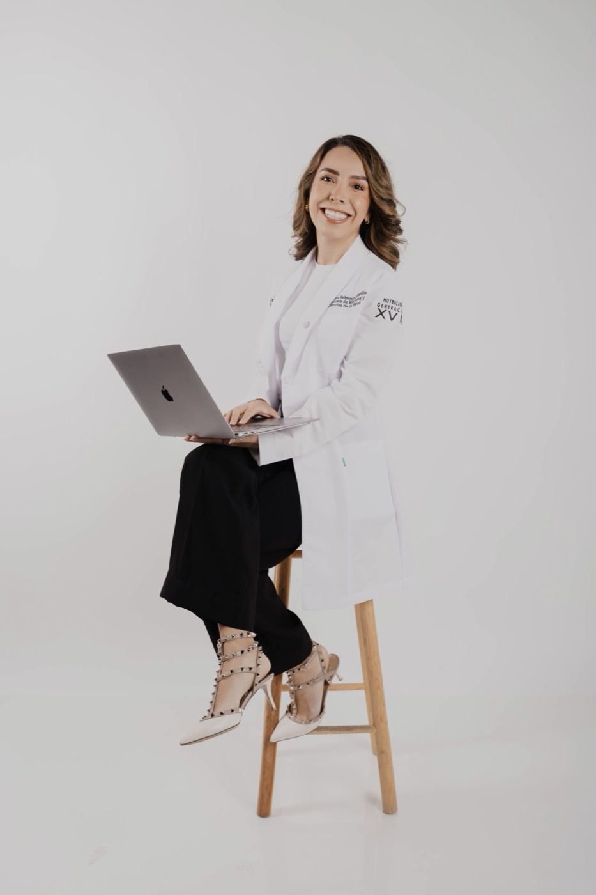
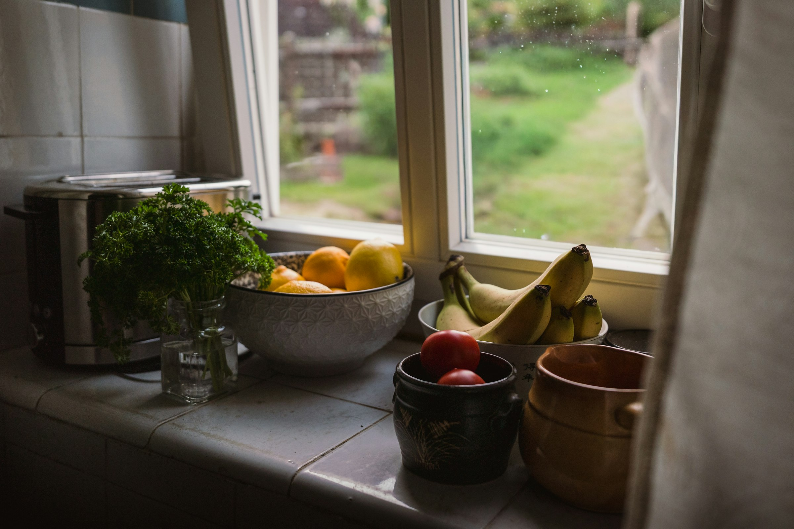
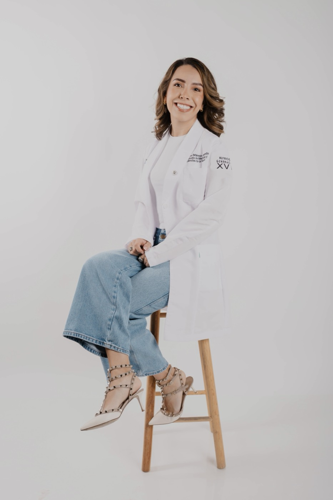
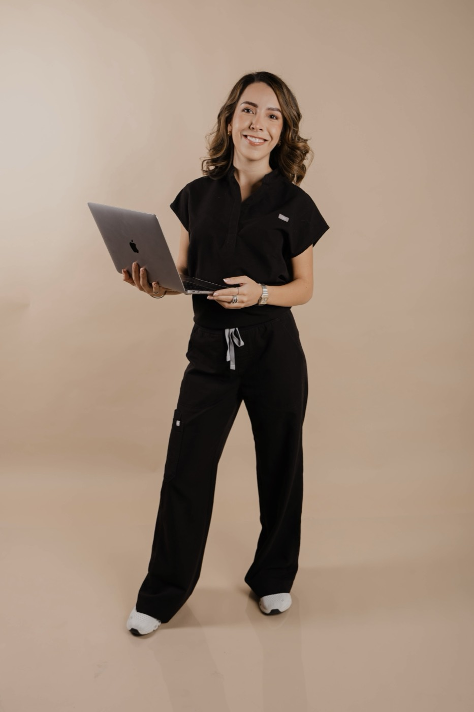
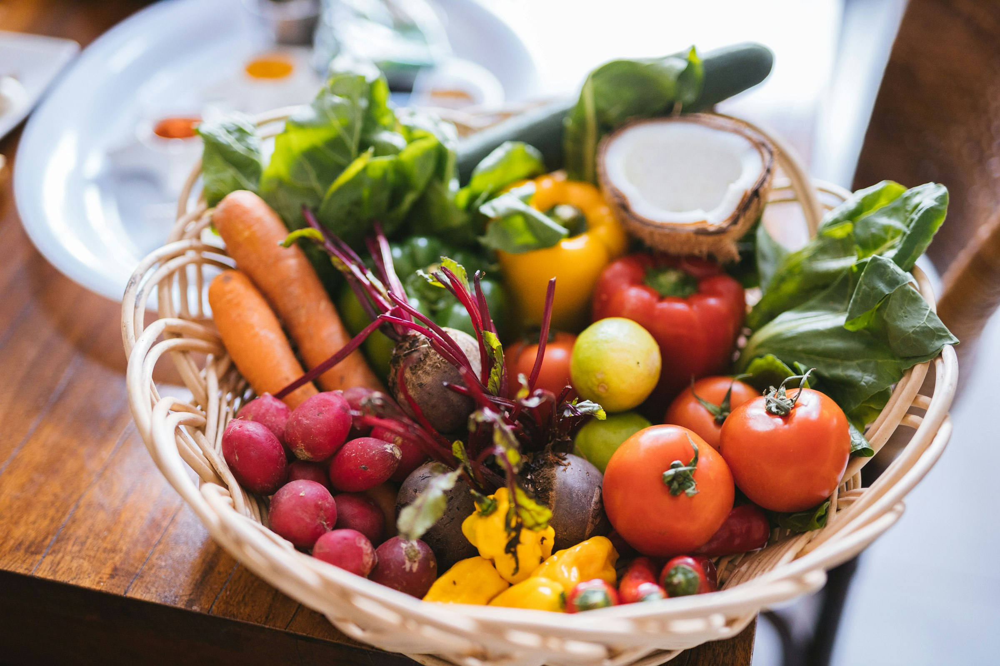
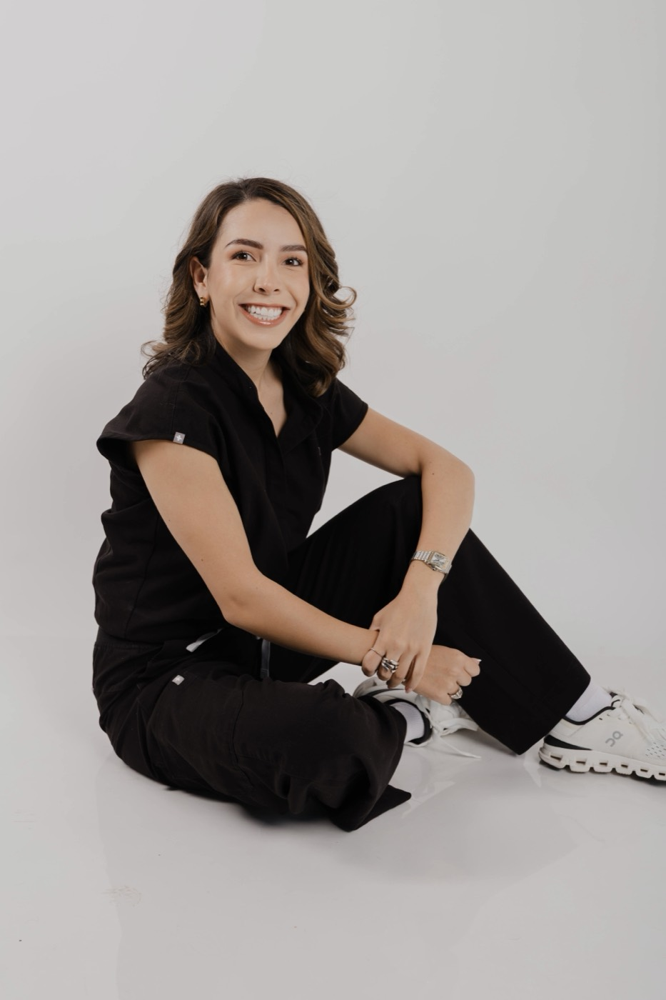
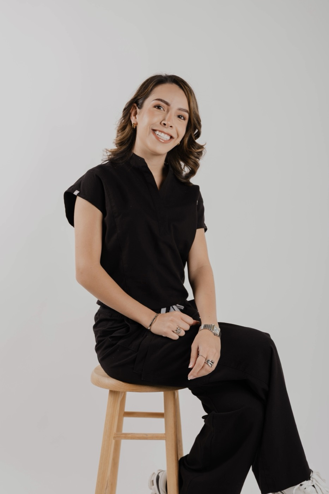

Nutrición clara,
hecha para ti
Sin dietas copiadas ni reglas imposibles. Entendemos de dónde partes, armamos un plan que encaje con tu vida y te acompaño hasta que los cambios se vuelvan tuyos. En línea o presencial en Guadalajara.

01Consulta 1:1 · 60 min
Consulta

02Paso a paso
Cómo funciona

03LNB · Tec de Monterrey
Sobre mí

Para quién es
Comer bien no debería sentirse como un castigo
Si quieres tratar o prevenir una enfermedad, tener más energía, que tu digestión deje de ser tema, organizar tu alimentación o mejorar tu composición corporal, aquí empezamos.

Sobre mí
LNB Danna Bribiesca
Nutrióloga. Te puedo ayudar a tratar o prevenir enfermedades, mejorar tus niveles de energía, mejorar tu digestión, encontrar un balance saludable, organizar tu alimentación y mejorar tu composición corporal.
Leer más +
Soy egresada de Nutrición y Bienestar Integral del Tec de Monterrey y me formé en hospitales como el Instituto Nacional de Ciencias Médicas y Nutrición Salvador Zubirán y el Hospital Civil de Guadalajara. Ahí aprendí que detrás de cada estudio de laboratorio hay una persona con una historia.
Me apasiona entender el porqué: cómo responden tu metabolismo, tu intestino y tu energía a lo que comes, y traducirlo a algo que puedas poner en tu plato mañana. Y como lo que comes también depende de cómo lo vives, me formé en acompañamiento conductual y en dieta baja en FODMAP con Monash University, para que el plan se adapte a ti y no al revés.
Creo que nadie debería salir de consulta con una hoja impresa y cero explicaciones. Por eso trabajo de forma cercana y práctica: escucho tu historia, te explico el porqué de cada recomendación y armamos un plan que puedas sostener en tu vida real.
No necesitas hacerlo perfecto para avanzar. Necesitas un plan que entiendas y a alguien que te acompañe.



La consulta
Qué incluye
Una consulta pensada para que salgas sabiendo qué hacer y, sobre todo, por qué. Toca cada punto para ver el detalle.
Cómo funciona
Del primer mensaje a tu plan
Sin vueltas ni letras chiquitas. Así es el camino, paso a paso.
Escríbeme
Cuéntame qué te gustaría cambiar. Resolvemos tus dudas y buscamos un horario que te acomode.
Evaluación
Conozco tu historia, tus hábitos, tu composición corporal y tus estudios. Aquí entendemos de dónde partes.
Tu plan
Te llevas un plan hecho para ti, con mini clase, recetarios y material para que sepas qué hacer desde el primer día.
Seguimiento
Cada 2 a 3 semanas revisamos qué funcionó, qué no y ajustamos. Los cambios se construyen, no se improvisan.
Antes de tu primera consulta
Lo que suelen preguntarme
Si te lo estás preguntando, seguro alguien más también. Y si tu duda no está aquí, escríbeme: con gusto te respondo.
01¿Cuánto dura la consulta?+
La primera consulta dura 60 minutos: tiempo para conocer tu historia, hacer tu evaluación y explicarte tu plan sin prisas. Los seguimientos son más cortos, de 30 a 45 minutos.
02¿Es en línea o presencial?+
Las dos. Presencial en Guadalajara o en línea desde donde estés. El acompañamiento es el mismo; lo único que cambia es cómo medimos tu progreso.
03¿Qué tengo que llevar o preparar?+
- Tus estudios de laboratorio recientes, si los tienes.
- La lista de medicamentos y suplementos que tomas.
- El cuestionario previo que te mando antes de la cita.
- Ropa cómoda.
Antes de tu cita te mando las indicaciones para que tu medición salga lo más precisa posible.
04¿Necesito estudios de laboratorio?+
No son requisito para empezar. Si tienes estudios recientes, los revisamos y los integramos a tu plan. Si no, según tu caso te indico cuáles vale la pena hacer.
05Tengo una condición de salud, ¿me puedes ayudar?+
Sí. La alimentación es parte del tratamiento y la prevención de muchas enfermedades. Cuéntame tu caso por WhatsApp y armamos tu plan tomando en cuenta tu diagnóstico y tu tratamiento.
06¿Me vas a dar una dieta estricta?+
No hay un formato único. Lo elegimos según tu objetivo y cómo es tu día a día: a algunas personas les funciona algo más estructurado y otras necesitan más flexibilidad. Lo importante es que lo puedas sostener.
07¿Cómo vamos a medir mi progreso?+
En cada seguimiento vamos viendo cómo te sientes. Para mí lo más importante son tus síntomas y cómo van cambiando: tu energía, tu digestión, tu descanso y tu relación con la comida.
El peso llega por añadidura. No soy una nutrióloga pesocentrista: tu progreso es mucho más que un número en la báscula.
08¿Cada cuánto son los seguimientos?+
Cada 2 a 3 semanas, de 30 a 45 minutos. Suficiente para ver avances, ajustar lo que haga falta y no perder el ritmo.
09¿Puedo escribirte si me surge una duda?+
Sí. La resolución de dudas es parte de tu acompañamiento, para que no tengas que esperar hasta la siguiente cita con algo que te está frenando.
10Ya lo he intentado muchas veces, ¿por qué ahora sería diferente?+
Es más común de lo que crees. Muchas veces lo que falla no es tu fuerza de voluntad, sino un plan que no estaba hecho para tu vida. Empezamos por entender qué pasó antes, para no repetirlo.
11¿Cómo agendo y cuánto cuesta?+
Escríbeme por WhatsApp. Ahí te comparto disponibilidad, costos y todo lo que necesitas para tu primera cita.

2 minutos
¿Qué te gustaría trabajar?
Elige lo que te gustaría trabajar y te dejo el mensaje listo para WhatsApp. Así, desde el primer mensaje, ya sé cómo ayudarte.
Agenda tu consulta
¿Empezamos?
Mándame un mensaje y cuéntame qué te gustaría cambiar. Te comparto disponibilidad y costos, y resolvemos tus dudas antes de agendar. En línea o presencial en Guadalajara.